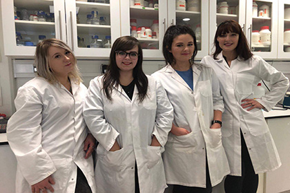
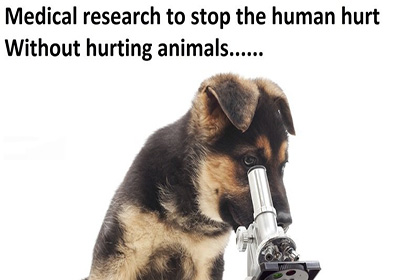
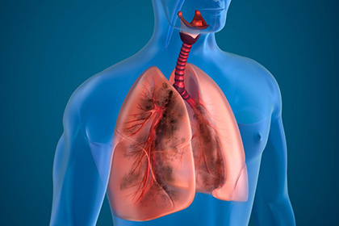

Company
3DSciSolutions aims to use human cells to grow fully functional lungs for researchers all around the world.
Team
We are a diverse, multilingual team of Molecular Biology Masters students with a passion for ethical research.
Motivation
Hundreds of millions of people worldwide suffer from lung-related diseases and with that we decided that our first organ product should be lungs. People affected by lung diseases suffer for the rest of their lives and their quality of life is substantially lower than that of a healthy person. Therefore, it is of the utmost importance that new therapies are developed in an ethical, efficient and effective manner.
Background
Historically animals such as mice, rats, guinea pigs etc. have been used in lung disease research to examine the effectiveness of a drug or to understand the pathological progression of a disease. At 3DSciSolutions, we believe that this is unacceptable, and we strive to provide an alternative approach to research that is safe, ethical, fast, effective and does not result in the unnecessary pain and suffering to animals. 3DSciSolutions offers innovative products, ‘never seen before’, in comparison with the current available market.
Objectives
Going forward, we will continue to advance our current knowledge of lung diseases, but also aim to grow a multitude of organs. We plan to diversify into growing human organs for transplantation using the recipients own stem cells. As the organs are made using recipient stem cells the organ will be a ‘perfect’ match and will not be recognised by the body as a foreign object, this will reduce the risk of organ rejection as well as limit the use of immunosuppressant drugs which can have serious consequences such as increased risk of infection.
Our Vision
We believe that 3DSciSolutions and our products will be the catalyst for revolutionising the world of science and medicine in the future.